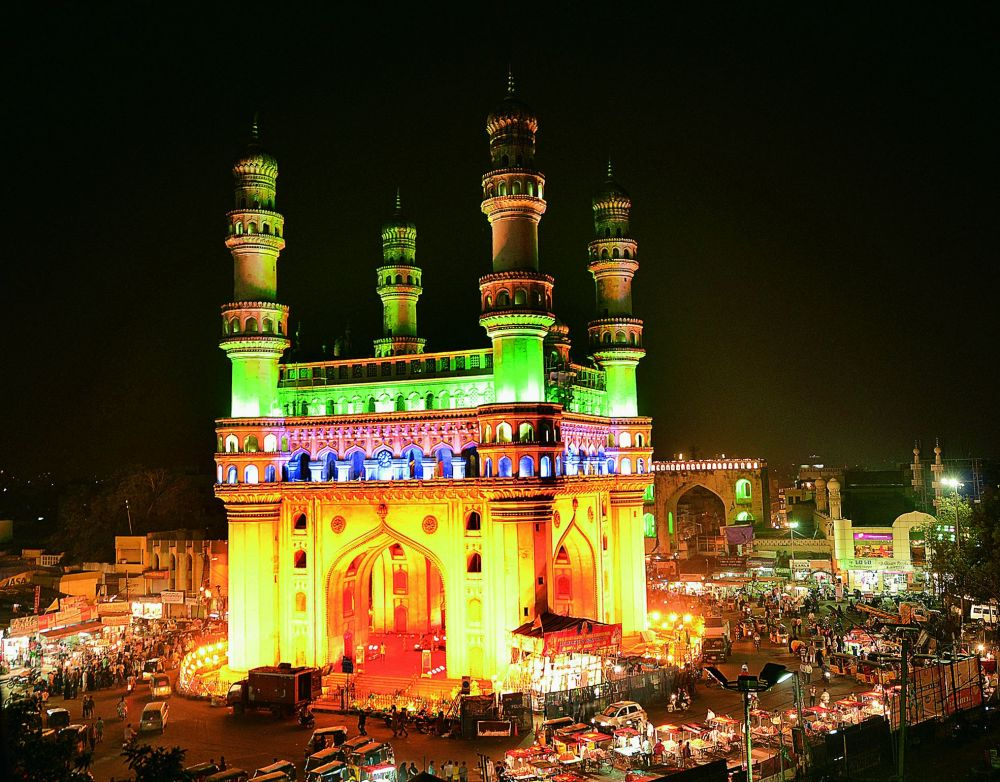
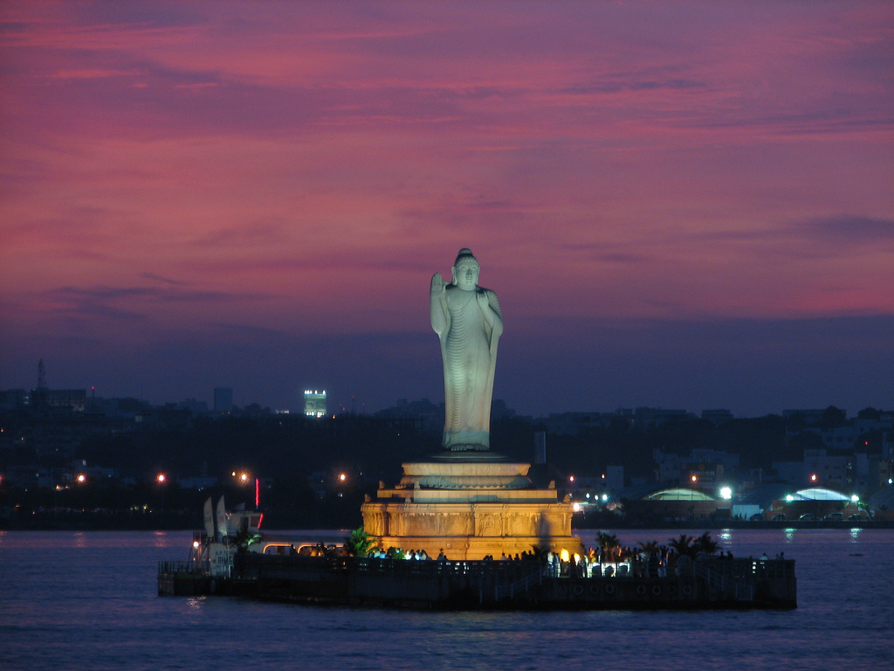
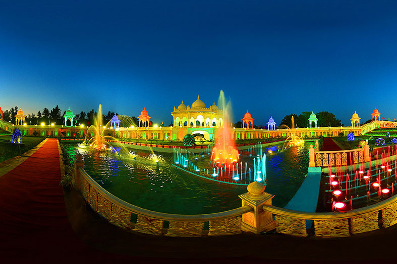
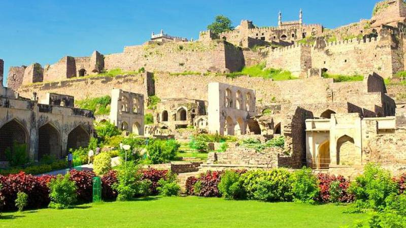

Places to Visit in Hyderabad
Hyderabad is the capital of southern India's Telangana state. Its historic sites include Golconda Fort, the Charminar, Hussain Sagar Lake and the famous Ramoji Film City.
-
Charminar
Hyderabad tour is incomplete without a visit to Charminar. An amazing blend of Indo-Islamic architecture, Charminar represents the glorious history of the city. Built in 1591 by Sultan Mohammed Quli Qutb Shah, Charminar is a square-shaped structure which is 56 meters high and 30 meters wide. Popularly known as ‘Arc de Triomphe of the East’, Charminar was constructed in the honour of Bhagmati, wife of Sultan Mohammed Quli Qutb Shah; immediately after he had shifted his capital to Hyderabad, which was earlier in Golconda. The name Charminar, which means “four (chaar)” “pillars (minars)” came from its structure which consists of four intricately carved pillars, one on each side.
Hussain Sagar Lake
Hussain Sagar is a necklace shaped lake in Hyderabad built by Ibrahim Quli Qutb Shah, and named after Hussain Shah Wali. It is spread across an area of 5.7 square kilometers and is fed by River Musi. A large monolithic statue of the Gautama Buddha, erected in 1992, stands on Gibraltar Rock in the middle of the lake.
<Ramoji Film City
One of the largest and glamorous film studios in the world, Ramoji Film City has also place in the Guinness Book of World Records. Spread across an area of almost 2500 acres, it is one of the major film making facility of the country offering everything related to pre and post film production. The architecture of the studio and the wide range of settings makes it one of the favourite spot for many film makers. With a capacity to accommodate close to 50 film units at the same time, Ramoji Film City offers umpteen numbers of film sets such as London Street, Hollywood sign, Japanese gardens, airport, hospital, etc. , landscapes and buildings as well as laboratories.
Golkonda
Golconda Fort Hyderabad is an outstanding example of brilliant engineering and magical architecture. Located at a distance of 11km from the city, it is the most famous of all Hyderabad sightseeing places. The name of the fort has been derived from the Telugu words "Golla" and "Konda" which together means 'Shepherd's Hill'. Founded in the approximately 12th Century by the Kakatiya Kings, this massive Golconda Fort with eight gates and 87 bastions was later built by Qutub Shahi Kings.
One of the Hyderabad’s most popular and supreme monuments, Golconda Fort allures every visitor with its unparalleled beauty and grandeur. A Hyderabad Tour is incomplete without a visit to this fort. However, do keep in mind the Golconda Fort timings and entry fee before planning a visit to this regal symbol of history. For instance, Golconda fort timings are from 9 am to 5.30 pm. After that, visitors are not allowed to enter the fort, unless they are going for the light and show in night. Hence, to explore the beauty of this place at leisure, plan you visit early in the day.